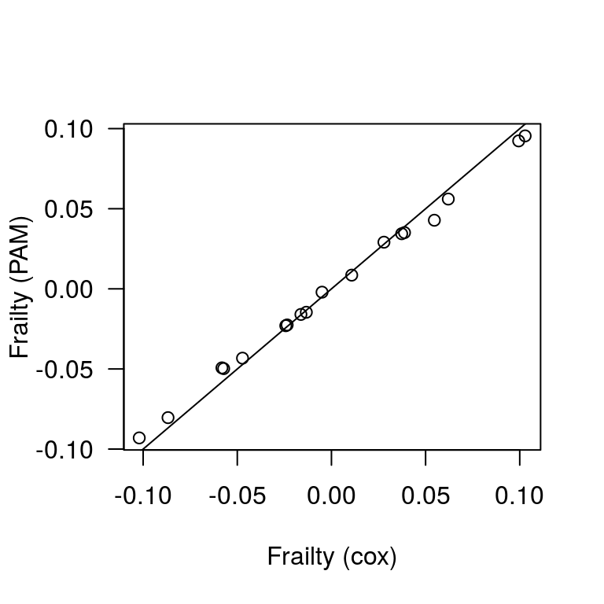
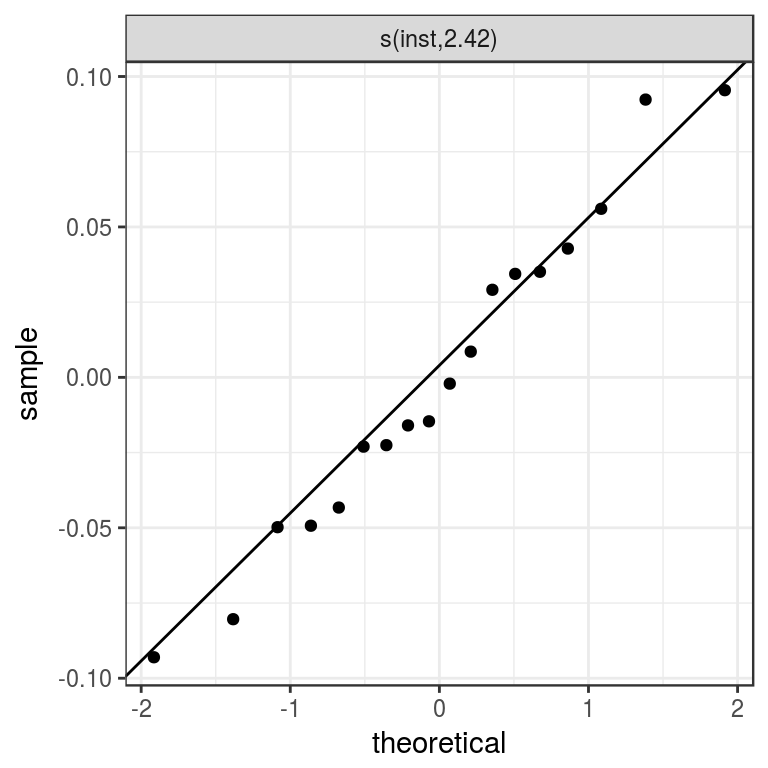

library(dplyr)
library(survival)
library(coxme)
library(pammtools)
library(mgcv)
library(ggplot2)
theme_set(theme_bw())Whenever subjects belonging to a cluster or group could have correlated outcomes, our models must account for such dependency structures. We can do so by including random effects in the model. In the context of survival analysis such effects are called “frailty” terms.
For illustration we consider the NCTG Lung Cancer Data (Loprinzi et al. 1994) that is contained in the survival package (Terry M. Therneau and Patricia M. Grambsch 2000). A description of the data is provided in ?lung.
The data contain survival times (in days) of advanced lung cancer patients from different institutions:
## inst time status age sex ph.ecog ph.karno pat.karno meal.cal wt.loss
## 1 3 306 2 74 1 1 90 100 1175 NA
## 2 3 455 2 68 1 0 90 90 1225 15
## 3 3 1010 1 56 1 0 90 90 NA 15
## 4 5 210 2 57 1 1 90 60 1150 11
## 5 1 883 2 60 1 0 100 90 NA 0
## 6 12 1022 1 74 1 1 50 80 513 0## [1] 228## # A tibble: 19 x 2
## inst n
## <fct> <int>
## 1 1 36
## 2 2 5
## 3 3 19
## 4 4 4
## 5 5 9
## 6 6 14
## 7 7 8
## 8 10 4
## 9 11 18
## 10 12 23
## 11 13 20
## 12 15 6
## 13 16 16
## 14 21 13
## 15 22 17
## 16 26 6
## 17 32 7
## 18 33 2
## 19 <NA> 1The penalized Cox model with frailty terms has been described in Therneau, Grambsch, and Pankratz (2003) and implemented in the coxme package for Gaussian frailties. Below we apply the coxme function to the lung data:
## ph.ecog
## 0.5073993## Min. 1st Qu. Median Mean 3rd Qu. Max.
## -0.102068 -0.041483 -0.009171 0.000000 0.038432 0.102873ph.ecog was estimated to be about 0.5 on the log-hazard scale.sd(cme$frail$inst)=0.059,For an equivalent model using PAMs we first transform the data set and then call mgcv:::gam for the fit. To include a Gaussian random effect we set the bs argument in the respective penalized s() term to bs='re' (see description in ?smooth.terms):
ped <- lung %>% as_ped(Surv(time, status)~., id="id")
pam <- gam(ped_status ~ s(tend) + ph.ecog + s(inst, bs="re"),
data=ped, family=poisson(), offset=offset)Comparison of the estimates of the two models shows that they are in close agreement (we use tidy_re from the pammtools package to extract random effects):
## pam cox
## ph.ecog 0.4963713 0.5073993re <- tidy_re(pam)
plot(cme$frail$inst, re$fit, las=1, xlab="Frailty (cox)", ylab="Frailty (PAM)")
abline(0, 1)
The pammtools package also provides a convenience function for a quantile-quantile plot of the estimated frailties to check the Gaussian assumption:

Loprinzi, C L, J A Laurie, H S Wieand, J E Krook, P J Novotny, J W Kugler, J Bartel, M Law, M Bateman, and N E Klatt. 1994. “Prospective Evaluation of Prognostic Variables from Patient-Completed Questionnaires. North Central Cancer Treatment Group.” Journal of Clinical Oncology 12 (3):601–7. https://doi.org/10.1200/JCO.1994.12.3.601.
Terry M. Therneau, and Patricia M. Grambsch. 2000. Modeling Survival Data: Extending the Cox Model. New York: Springer.
Therneau, Terry M., Patricia M. Grambsch, and V. Shane Pankratz. 2003. “Penalized Survival Models and Frailty.” Journal of Computational and Graphical Statistics 12 (1):156–75. http://www.jstor.org/stable/1391074.